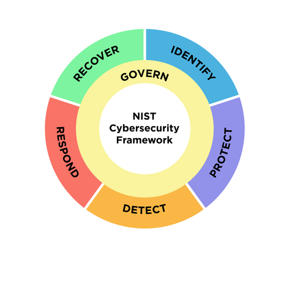

Why this matters
The source deck for this use case is marked WIP — the story arc and framework mappings are solid, but the demo runbook below is starter guidance authored for this library, not a field-validated script. Rehearse it in your own tenant before running it with a customer.
For most organisations compliance is not optional: it is a condition of trading. Frameworks like ISO 27001, NIS2 and SOC 2 decide whether customers will sign, whether regulators stay satisfied, and whether insurers will underwrite cyber risk.
The problem is how compliance is achieved. Security built from point solutions is slow to manage, leaves gaps between tools, and adds supply-chain risk with every extra vendor. Evidence lives in a dozen consoles, and every audit becomes a correlation project. The position this use case builds: Cato CASB + DLP, enforced everywhere and reported from one management plane, gives you the controls and the evidence in one place — a deployment plan that ends with compliance achieved, not just tooling bought.
What ISO 27001, NIS2 and SOC 2 actually are
ISO 27001
An international standard to establish, implement and maintain information security — an auditable Information Security Management System (ISMS) with certification the business can show customers.
NIS2
The EU framework for protecting critical infrastructure: ensure the security and resilience of essential services and prevent, deter and mitigate major incidents. Legally binding for in-scope entities.
SOC 2
An audit of the controls behind security, availability, confidentiality and privacy — the attestation report enterprise buyers increasingly demand before they will sign.
Six things compliance owners tell us
Slow management
“It takes us weeks to configure the same policy across all the tools.”
Control sprawl
“My network security is a mess. Just too many boxes and models.”
Audit evidence
“How do I correlate evidence across all this tooling?”
All edges
“How do I make sure remote workers are kept compliant?”
SaaS activity
“I need to ensure my SaaS usage is controlled.”
Governance
“Shadow IT and unknown SaaS apps make it difficult to comply.”
“Which framework is driving you right now — and when the auditor asks for evidence that a control worked last quarter, how many consoles do you have to open to answer?”
The business impact of falling short
Reputational impact
A failed audit or a public incident undermines the trust the brand trades on.
Regulatory exposure
Industry regulatory requirements don't negotiate — non-compliance invites enforcement.
Blocked growth
Without the certification or attestation, new customers can't be signed — the business can't grow at the desired pace.
Uninsurable risk
Cyber insurers demand demonstrable controls; without them the business can't be insured against attack.
CASB + DLP, with one evidence plane
Cato converges the controls the frameworks keep asking for — cloud-service governance, access control, information classification and transfer control — into the same single-pass engine that carries the traffic. Every flow from every edge is inspected once at the PoP, and every decision lands as an event in one management application. That is the difference between owning tools and producing evidence.
How CASB + DLP move the compliance needle
Application Dashboard — shadow IT visibility
Continuous monitoring of every cloud app in use, sanctioned or not, including DLP events with forensic evidence — the governance gap made visible.
Risk-based CASB controls
Access to cloud services governed by application risk — allow the sanctioned, restrict the risky, block the unacceptable, from one rule base.
DLP for regulated data
Alerting and control of regulated and sensitive data — PCI, PII, financial records — as it moves between users, SaaS and the internet.
App Catalogue — vendor due diligence
Review which applications hold which compliance attestations before the business relies on them — supplier due diligence in minutes, not weeks.
NIS2 Article 21 → NIST CSF → Cato
NIS2's Article 21 security areas align closely with the NIST Cybersecurity Framework functions — and those functions are exactly what the Cato SASE Cloud already delivers. Use the wheel to frame the conversation, then walk the mapping.

| NIS2 security area | NIST CSF function | Cato SASE Cloud approach | Cato technology / service |
|---|---|---|---|
| Incident handling & reporting | Detect · Respond | Thresholds for alerts and events; security scores; MITRE ATT&CK dashboards; threat/incident reports; remediation | CMA · MDR · XDR |
| Business continuity | Identify — Business Environment | Cloud-native, fully meshed architecture; 99.999 % uptime SLA between PoPs | Global private backbone · HA everywhere · redundant Tier-1 links |
| Supply-chain security | Detect — Continuous Monitoring | Granular access-control policies | NGFW · CASB · DLP |
| Systems acquisition, development & maintenance | Identify — Risk Assessment · Protect — Data Security | Automatic security assessment against best practices; full encryption of data in transit and at rest with proprietary distributed KMS | CMA · Cato Socket · Cato Client · Cato PoPs / data lake |
| Cryptography & encryption | Protect — Data Security | Full encryption of data in transit and at rest with proprietary distributed KMS | Cato Socket · Cato Client · Cato PoPs / data lake |
| Access-control policies | Protect — Access Control | RBAC; MFA; SSO | CMA |
| Asset management | Identify — Asset Management | Full application awareness; full context flow awareness | DPI · NGFW · CASB · IPS |
| Zero-trust security | Protect — Access Control | Universal ZTNA with continuous assessment; MFA; SSO | CMA · Cato Socket · Cato Client |
ISO/IEC 27001:2022 clauses 4–10 mapped to Cato
Clauses 4–10 are customer-owned ISMS requirements. Cato supports them with controls, telemetry and evidence — but it does not replace your governance, risk, audit or corrective-action processes. Position Cato as the engine inside the ISMS, not a substitute for it.
| Clause | How Cato maps | What customer still owns | Coverage |
|---|---|---|---|
| 4 — Context | Treat Cato as an externally provided cloud security/networking service inside scope, supplier and dependency analyses; Cato's security/compliance materials and DPA support supplier due diligence. | Scope boundaries, legal/regulatory requirements, interested-party expectations, supplier risk in business context. | Indirect |
| 5 — Leadership | Very little direct product mapping — centralised administration and managed services support execution, but leadership evidence remains internal. | Approve policy, assign owners, fund the ISMS, run governance forums, demonstrate oversight. | Minimal |
| 6 — Planning | Candidate technical treatments and evidence for the Statement of Applicability: ZTNA, NGFW, SWG, IPS, CASB, DLP, DNS Security, TLS inspection, logging, XDR and MDR. | Risk methodology, risk evaluation, control selection and exclusions, the SoA itself, measurable objectives. | Moderate |
| 7 — Support | Unified management plane, telemetry, documentation, integrations and optional managed services that help run security operations and preserve evidence. | Training and awareness, document and record control, communications, competence records. | Partial |
| 8 — Operation | The strongest fit: central enforcement of access control, network security, web filtering, cloud-app control, DLP, logging, monitoring and detection/response across users, sites and cloud traffic. | Operating procedures, change approval, exceptions, vendor supervision, event investigation, assurance over outsourced processes. | Strong |
| 9 — Performance evaluation | Dashboards, event telemetry, the data lake, XDR stories and SIEM integrations supporting monitoring and control-effectiveness evidence. | KPIs, effectiveness reviews, internal audits, compliance evaluation, management reviews. | Moderate |
| 10 — Improvement | Telemetry, threat stories and vendor-delivered service updates surface weaknesses and improvement opportunities — inputs to improvement, not the corrective-action process itself. | Root-cause analysis, nonconformity records, corrective actions and verification, continual improvement. | Partial |
How to run the demo
The source deck's demo slide is an empty placeholder, so this runbook was authored for the library from the capabilities the deck positions. Validate each step in your own tenant and adapt to the framework your prospect cares about.
-
Open on shadow IT — the governance gap
Monitor → Cloud Apps Dashboard
Show the full picture of cloud application usage across the tenant: how many apps are in use, sanctioned vs unsanctioned, and their risk scores. Tie it back to the quote — “shadow IT and unknown SaaS apps make it difficult to comply.” You can't govern what you can't see.
-
Vendor due diligence in the App Catalogue
Drill from the dashboard into a specific SaaS app's App Catalogue entry. Show its risk score and compliance attributes — which certifications and attestations the vendor holds. This is supplier due diligence (ISO 27001 clause 4, NIS2 supply-chain security) reduced from weeks of questionnaires to a lookup.
-
Build a DLP rule for PCI data
Security → DLP Configuration
Create (or walk through) a rule using a credit-card/PCI data profile: block uploads containing cardholder data to unsanctioned apps, with an event logged on every match. Narrate it as “information classification and transfer control” — the language auditors use.
-
Show the evidence — Data Protection Dashboard
Monitor → Data Protection Dashboard
Switch from control to proof: DLP events over time, top triggered rules, the users and apps involved. When Priya from finance trips the PCI rule, the event is right here with full context — this is the control-effectiveness evidence clause 9 asks for.
-
Change governance — Audit Trail
Administration → Audit Trail
Show every administrative change in the tenant: who changed which policy, when, from where. One attributable change record across the entire security stack — change management evidence without correlating five consoles.
-
Close on exportable reports
Export the dashboards you have just shown and explain that reporting can be generated on a recurring basis for the compliance team. The close: “when the auditor asks, this is one evidence pack from one platform — not a quarter's worth of screenshot-gathering.”
How to prove it in the customer's tenant
Be honest about what this PoV is: compliance has no toggle to demonstrate. What you can prove — measurably, on the customer's own traffic — is that the platform produces auditor-consumable evidence for named controls. So this pilot is an evidence-pack engagement: the customer's compliance owner picks the controls up front, each control is mapped to a specific CMA artefact, and the pilot's job is to fill every row of that matrix with dated exports from live traffic. Agree the criteria before configuring anything, per Running a Cato PoV — and say the caveat from the ISO table above out loud at the workshop: the platform evidences technical controls; it does not make anyone compliant.
| Success criterion | What we deliver | Evidence artefact | Where it lives |
|---|---|---|---|
| Control-to-evidence matrix agreed up front | A workshop with the customer's compliance owner selects which ISO 27001 / NIS2 / SOC 2 controls the pilot will evidence — their control set, from their SoA or audit plan, never our guess — each mapped to a named CMA artefact | The signed matrix, dated, with a named compliance owner | Shared evidence doc — the workshop's output and the pilot's contract |
| Every in-scope control evidenced from pilot traffic | No row is asserted on architecture: each carries dated artefacts generated by the platform during the pilot window — policy CSV exports, rule hit count report PDFs, Audit Trail extracts, event exports | Platform-generated files (CSV/PDF), dated inside the PoV window, filed per control | Monitor → Events · Home → Reports · Administration → Audit Trail · the policy pages' Export action |
| Platform due-diligence annex accepted | Cato's own certifications and attestations, presented exactly as published on the Cato security, compliance & privacy page — the supplier-due-diligence input the customer's cloud-services and supplier controls require | The annex, citing the trust page verbatim, accepted by the compliance owner | Supplier-due-diligence section of the pack |
| Shared-responsibility line documented per control | Every matrix row states what the platform evidences and what stays organisational (policy approval, reviews, corrective action) — no row implies the platform closes a control on its own | The "stays with the organisation" column, completed for every row | The matrix itself — mirrors the clause 4–10 table above |
| Pack delivered auditor-consumable | One indexed pack, one section per control: control text, the platform control, the dated artefacts, the responsibility note — readable by an auditor without a console login | The pack (PDF/folder) plus the readout where the compliance owner walks it | Wrap-up / decision meeting booked at the workshop |
- A named compliance owner — the ISMS manager, audit lead or whoever faces the auditor — in the workshop, choosing the controls. Without them the matrix is our guess and the pack inherits it.
- Licences checked against the matrix: the Application Control policy and Apps dashboards need the CASB licence, and Data Control rules additionally need the DLP licence (Data Control policy). A control row only counts if the capability evidencing it is licensed in this tenant.
- TLS inspection staged first where content-level evidence (DLP matches) is in scope — content inspection requires it; see TLS Inspection: Staged Rollout Playbook. Identity integration syncing, so artefacts read "Priya did this", not "an IP did this" — see Identity Integration Design.
- Tracking on for every in-scope rule — a rule that doesn't generate events reports a hit count of zero, and a zero-evidence row is a failed row.
- An admin with the Editor role — policy CSV export requires it.
The control-to-evidence matrix
A worked example to edit in the workshop — the control references below are illustrative; the real matrix uses whatever the compliance owner's SoA, Article 21 gap analysis or SOC 2 criteria list actually names. The last column is not small print: it is what keeps the pack credible in front of an auditor.
| Control (example refs) | Platform control on pilot traffic | Artefacts to file | Stays with the organisation |
|---|---|---|---|
| Access control ISO A.5.15 · SOC 2 CC6.1 · NIS2 access-control policies |
Internet / WAN Firewall rules scoping who reaches what, enforced identically for sites and remote users | Policy CSV export; rule hit count report; one firing event per key rule from Monitor → Events | The access-control policy document, joiner/leaver process, access reviews |
| Data leakage prevention ISO A.8.12 · SOC 2 confidentiality |
Data Control rules on regulated data (PCI/PII profiles) over inspected pilot traffic — monitor first | Application Control policy CSV export; Data Protection dashboard capture; DLP event export with matched data types | Data classification scheme, handling procedures, incident response beyond the block |
| Cloud-service & supplier governance ISO A.5.23 / A.5.19 · NIS2 supply-chain security |
Shadow-IT inventory from real traffic; CASB rules keyed on app risk and attestation attributes (e.g. monitor apps where ISO 27001 is false) | Applications dashboard capture (sanctioned vs unsanctioned); the attestation-keyed rule and its events | Supplier assessments, contracts and DPAs, the approved-app register itself |
| Change management ISO A.8.32 · SOC 2 CC8.1 |
Every admin change to every policy in one attributed, chronological log — who, what, when, old and new values | Audit Trail extract for the pilot window | Change approval workflow, CAB records, emergency-change procedure |
| Logging & monitoring ISO A.8.15 / A.8.16 · SOC 2 CC7.2 · NIS2 incident handling |
Unified, user-attributed events for every enforcement decision across all engines, exportable and SIEM-streamable | Weekly event exports per in-scope control; SIEM ingestion note where configured | Log review procedure, alert triage, incident classification and reporting duties |
How to assemble the pack
-
Workshop the matrix with the compliance owner
One session before anything is configured. Bring the worked example above; the compliance owner strikes, edits and adds rows from their own SoA or audit plan until every row names a control, an artefact and a responsibility split. Book the readout meeting in the same session, per the PoV framework. Five to eight controls is a pack; twenty is an audit — park the rest.
-
Confirm scope, licences and tracking
Security → Internet Firewall Security → App & Data Inline
Walk every in-scope rulebase: each rule the matrix relies on has tracking set to generate events. Any new DLP rule created for the pilot starts in monitor/notify — nothing blocks until events prove the match is right (Data Control policy). Check CASB and DLP licences against the matrix rows now, not at readout.
-
Export the published policies
Security → Internet Firewall Security → TLS Inspection
From each policy page, use Export to produce the CSV — supported for the Internet Firewall, WAN Firewall, TLS Inspection and Application Control policies (exporting security rules to CSV; Editor role required, and note sections are not included in the file). This is the "what the control is" half of each row: the enforced rulebase, in a file an auditor can open.
-
Schedule the rule hit count report
Home → Reports
From the Catalog tab, generate the rule hit count report — one PDF covering the Internet Firewall, WAN Firewall and Network Rules policies, with top matched rules and per-rule counts and last-hit timestamps. Set it recurring weekly for the pilot: this is the "the control operated" half of each row, on a vendor-generated timestamped document rather than a screenshot.
-
Extract the Audit Trail for the pilot window
Administration → Audit Trail
Filter to the pilot window and capture the change record — every policy addition and edit, attributed, with previous and new values (using the Audit Trail). The trail holds 12 months, viewable up to 3 months at a time, and changes can take several minutes to appear. The pilot's own build is the exhibit: the rules created in step 2 appear here, attributed — change management demonstrated on changes the auditor can cross-check.
-
Export events weekly, per control
Monitor → Events
Filter per matrix row — firewall events for the access row, Data Control events (with matched DLP profiles) for the data row — and export (up to 250,000 events per export, 31-day maximum range). Export weekly into the evidence doc rather than reconstructing at wrap-up. Where the customer already streams events to a SIEM, note it in the row — continuous evidence beats periodic exports.
-
Compile the pack and add the supplier annex
One section per control: control text, the platform control, the dated artefacts, the responsibility note. Append the due-diligence annex citing Cato's own certifications exactly as the trust page publishes them — at the time of writing it lists SOC 2 and SOC 3, PCI DSS Level 1, ISO/IEC 27001:2013, 27017:2015, 27018:2019 and 27701:2019, UK Cyber Essentials, a CSA STAR self-assessment and GDPR alignment — and direct the auditor to Cato for current reports rather than restating them. Deliver at the readout booked in step 1.
What good output looks like


Troubleshooting — evidence gaps and auditor scepticism
A row has no artefact — feature not licensed
Data Control rows need the DLP licence on top of CASB; dashboards have their own licence gates. Mark the row "not evidenced — capability not licensed in pilot", state what the commercial proposal must include, and never substitute a demo-tenant capture — one borrowed screenshot taints the whole pack.
Hit counts read zero
Per the KB: if a rule is set to not generate events, the hit count is zero — the control may be enforcing perfectly and still produce no evidence. Enable event tracking on every in-scope rule in week one, then let traffic accumulate before the first report run.
DLP rows come back empty
Content inspection requires TLS inspection covering the pilot cohort. If Data Control events aren't landing, check the TLSi policy scope and exclusions before touching the DLP rules — then re-test with a harmless seeded file matching the profile.
"A screenshot isn't evidence"
Fair — so lead with platform-generated files: policy CSVs, the rule hit count PDF, event exports, all carrying their own dates. Screenshots are the garnish (dashboards, drill-downs), and every one is dated and shows the tenant context. Undated artefacts invite "when was this true?" in the worst meeting.
"Your vendor's certificate isn't yours"
Correct, and the pack should say so first: the annex evidences supplier due diligence — the cloud-services and supplier-relationship controls — not the customer's own certification. The customer's certificate comes from their ISMS audit; the platform contributes controls and evidence inside its scope.
Windows expire before wrap-up
An Events query spans at most 31 days and the Data Protection dashboard looks back 90 — evidence must be exported as the pilot runs, not reconstructed at the end. The weekly export cadence in the steps is the fix; the Audit Trail's 12 months (3 viewable at a time) is the safety net, not the plan.
Gotchas & exit
- Never claim the platform makes anyone compliant. Certification and attestation belong to the customer's ISMS, governance and audit programme — risk assessment, policy, reviews and corrective action all stay organisational, exactly as the clause 4–10 table above draws it. The pilot proves the platform evidences named technical controls; write nothing stronger.
- Cite Cato's certifications only from the trust page, and check it before every readout. Editions and scope matter to auditors (the page currently lists ISO/IEC 27001:2013, for example) — present what is published, dated, and route requests for current reports and certificates to Cato rather than paraphrasing.
- The pack is a point-in-time exhibit. Policy exports and reports describe the pilot window; they will be regenerated for the real audit. Say so in the pack — it is a feature: the same one-console process that produced this pack in a fortnight is the process the compliance team inherits.
Exit: unwind is small and itself evidenced. Disable or delete any monitor-mode DLP and firewall rules created for the pilot — the removals land in the Audit Trail, which is a tidy closing exhibit of change control. Hand the pack to the compliance owner as their asset: the matrix becomes the working paper for the real audit, and the rows marked "not evidenced — capability not licensed" become the commercial conversation.